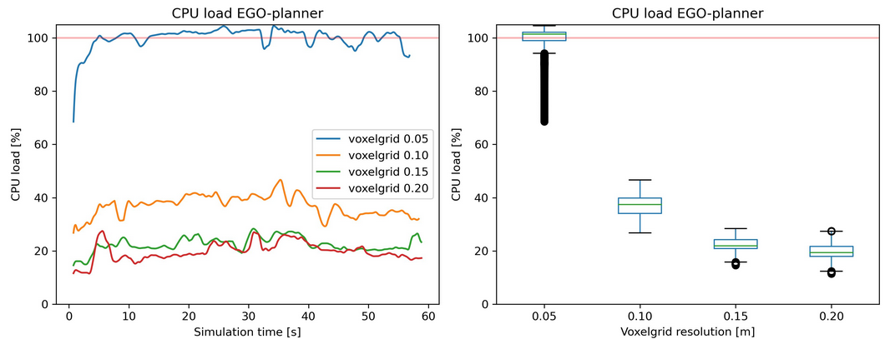
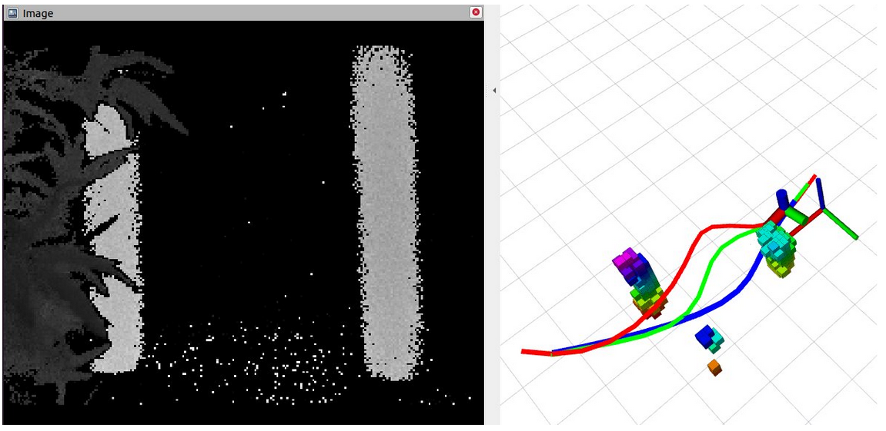
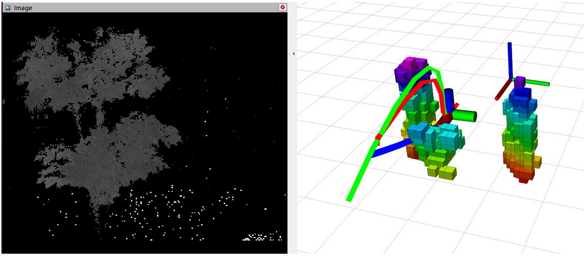

Downscaling autonomous drone navigation
 3D design for downscaled autonomous navigation on Tello drone
3D design for downscaled autonomous navigation on Tello drone
For the second part of my Thesis project in my Masters, I have researched how autonomous navigation for drones in forest conditions downscales. In this downscaling, the CPU and memory load of the processor, the sensor quality, and flight peformance are considered.
In order to compare performance in the rainforest with for example processor load, the performance has to be quantified somehow. To make this performance measurable, I created four metrics with formulas. These four metrics are:
- the miminum findable gap size the drone can find to traverse through
- the minimum obstacle size the drone can detect
- the maximum obstruction width the local planner can plan around
- the reaction time of the perception to map obstacles and detect collisions
To benchmark how the performance and processor load change with different configurations for the planning algorithm, I chose to run simulations where the board replays actual logged flight data. The perception and planning algorithm then processes this real forest flight data according to the specifically given setting. This setting then varies to compare different setups.
For the benchmarking, a dataset is created with the 500-gram autonmous drone built for the Xprize Rainforest Competition. The 500-gram drone flew over a trail in a dutch forest fully autonomous, and all data is recorded. From the recorded data, the Drone’s localisation data and the depth image are extracted. This extraced data is then injected in ROS where the perception and path planning are running with a specific configuration. In this simulation, loop durations for sup-processes, CPU load, and memory load are measured. To steamline the benchmarking, the simulation process is automated such that a set of pre-defined configurations is simulated back-to-back to run over 100 simulations of a couple hours. In this automated benchmarking, the system performance is logged in ROSbag files and transfered to pickle files.
These pickle files contain data that is directly imported in Python. In a Python script, the data is processed and visualised. In the visualisations, the loop durations or load is plotted in time graphs and statitically shown in boxplots. These visualisations not only show the average value, but also the variation in the measurement. For every simulation, the four perfromance metrics are calculated by the measured data and configuration settings. The figure below shows an example of the measured CPU load when varying the resolution of the obstacle map (voxel-grid). In this example, a 0.05m voxelgrid reffers to a mapping where obstacles are mapped in cubes of 5x5x5cm. The smaller the cubes, the more accurate obstacles are represented, and the smaller gaps can be found by the planner to plan a path through. 
The benchmarking over 100 configurations of the planner on exactly the same scenario, the results show that configurations related to the perception (depth-image resultion/rate, voxel-grid resolution) have the biggest impact on reducing the CPU load and performance. In the research, tradeoffs are visualised how different configurations with different CPU loads and performance relate to eachother. These tradeoffs can then be used to choose what performance are required or most important, and which are less important for a certain task. With this knowlegde, a system can be configured to use a low CPU load where the performances are known upfront.
With these results, a Tello drone with full onboad autonomy is created, shown at the top of this page. This Tello drone can navigate through 1.0m gaps, has a 300ms reaction time, detects obstacles of 2cm and bigger, and plans around obstacles upto 3.6m width. Onboard the Tello drone, a new lightweight type of camera is used wich is quite novel in this field, the Arducam TOF depth camera. To process all autonomy, a Raspberry Pi Zero 2w is used. In total the system weighs 110 grams including battery, and can fly for 4 minutes. In publications, I have not found drones that compute onboard autonomous path planning on this small size and flight time.
The two images below show Rviz with the depth image from the TOF camera, the mapping of obstacles in the blocks, and the path planning in 3D around the obstacles
 
Andreas Zwanenburg
Ir. Robotics Engineer
Robotics / Drone Engineer, specialisation in robot autonomy